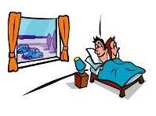
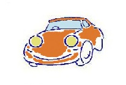
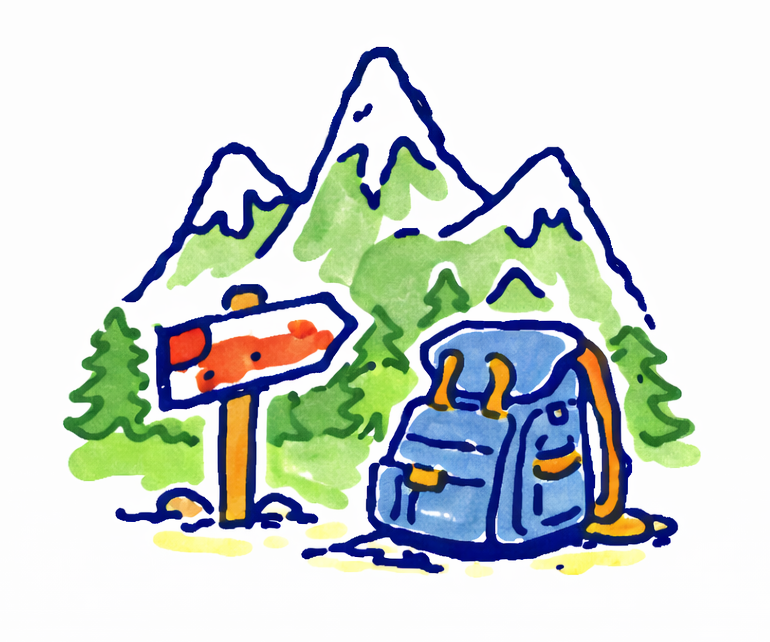
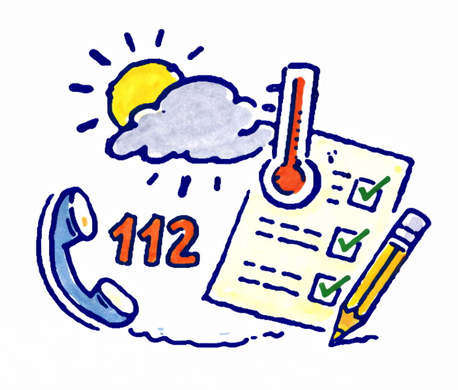

Strumenti e link per organizzarti in autonomia
Questa pagina raccoglie collegamenti esterni e strumenti pratici (hotel, trasporti, noleggio, parchi, meteo). Abruzzo che Viaggi non gestisce prenotazioni né intermediazioni. I link portano a siti terzi: verifica sempre condizioni, prezzi, disponibilità e aggiornamenti sui canali ufficiali.
Turismo Regione Abruzzo
Per informazioni istituzionali aggiornate su eventi, destinazioni, ospitalità e servizi turistici consulta anche il portale ufficiale della Regione Abruzzo.

Dove dormire
Portali e riferimenti utili per cercare strutture.

Muoversi
Noleggio auto, treni e trasporto regionale.

Parchi & natura
Siti ufficiali dei parchi e riferimenti escursionismo.

Prima di partire
Meteo, sicurezza e numeri utili.
Dove dormire
Portali e pagine utili per cercare strutture. Preferisci sempre verifiche e contatti diretti con le strutture.
Muoversi in Abruzzo
Strumenti per confrontare noleggio auto e per consultare trasporti pubblici.
Comparatori (utili per confrontare)
Operatori diretti
Trasporto pubblico
Nota: le informazioni su aeroporto e voli verranno trattate nella sezione “Viaggi dall’Abruzzo”.
Parchi & natura
Per regolamenti, sentieri, accessi e avvisi consultare i siti ufficiali dei parchi.
Prima di partire
Controlla meteo e avvisi, soprattutto per montagna e aree interne. In emergenza: 112.
Se vuoi, qui possiamo aggiungere anche un box “consigli rapidi” (es. abbigliamento, acqua, scarpe, stagioni).